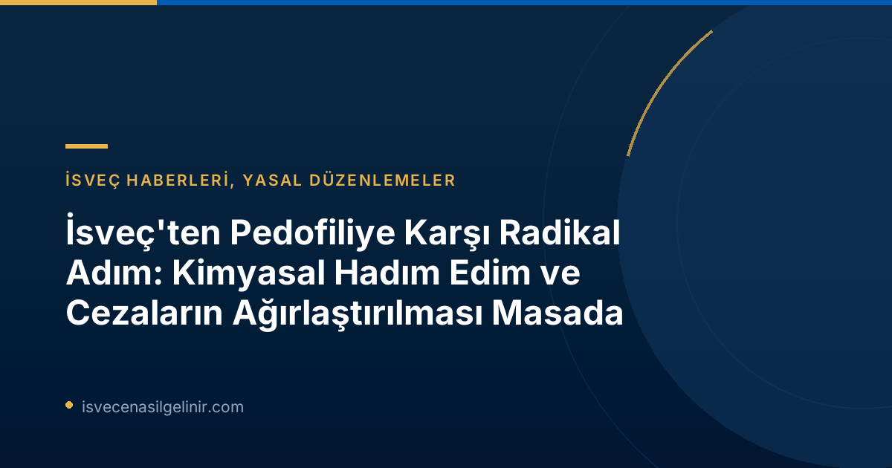

İsveç Hükümetinden Çocukları Koruma Konusunda Kararlı Adımlar
İsveç'te iktidardaki Tidö partileri, çocukları pedofili suçlarından daha etkili bir şekilde koruyabilmek amacıyla yeni ve radikal sayılabilecek yasal düzenlemeler üzerinde duruyor. Bu kapsamda, bir "çocuk güvenliği araştırmacısı" görevlendirilmesi kararı alındı. Görevlendirilen araştırmacı, çocuklara yönelik cinsel suçlarla mücadelede mevcut yasaları ve uygulamaları detaylı bir şekilde inceleyerek kapsamlı öneriler sunacak.
İsveç Adalet Bakanı Gunnar Strömmer (M), konuya ilişkin yaptığı basın açıklamasında, bu durumun "ülkemizin en karanlık ve en ciddi toplumsal sorunlarından biri" olduğunu vurguladı. Strömmer, hiçbir çocuğun cinsel istismara maruz kalmaması gerektiğini ve böyle trajik olaylar yaşandığında toplumun tepkisinin bugün olduğundan çok daha güçlü olması gerektiğinin altını çizdi. Bu açıklamalar, hükümetin konuya verdiği önemi ve kararlı duruşunu açıkça ortaya koymaktadır.
Gönüllü Kimyasal Hadım Edim: Yeniden Suç İşleme Riskini Azaltmada Bir Çözüm Mü?
Yeni başlatılan soruşturmanın en dikkat çekici maddelerinden biri, cinsel suçlardan veya çocuk pornografisi suçlarından hüküm giymiş kişiler için gönüllü kimyasal hadım ediminin koşullu tahliyenin bir ön koşulu olarak değerlendirilmesi olasılığıdır. Bu yöntem, suçluların yeniden suç işleme riskini minimize etmeyi hedefliyor.
Temel Odak Noktaları: Gönüllü Kimyasal Hadım Edim
- Kapsam: Cinsel suçlar veya çocuk pornografisi suçlarından hüküm giymiş kişiler.
- Durum: Koşullu tahliyenin bir ön koşulu olarak değerlendirilmesi.
- Amaç: Yeniden suç işleme riskini azaltmak.
- Araştırma Metodu: Bilimsel destek ve uygulamanın uygun olacağı durumlar detaylıca incelenecek.
İsveç'in yasal sistemindeki bu tür reformlar, ülkenin genel hukuki yapısını ve toplumun korunmasına yönelik hassasiyetini göstermektedir. İsveç'te yaşam ve yasal sorumluluklar hakkında daha fazla bilgi edinmek için sverigemedborgarskapsprov.com adresini ziyaret edebilirsiniz.
Adalet Bakanı Strömmer, araştırmacının bu tür bir tedavinin yeniden suç işleme riskini azaltıp azaltmadığına dair bilimsel destek olup olmadığını ve eğer varsa, hangi durumlarda bu uygulamanın uygun olacağını araştırmasını özellikle talep etti. Bu yaklaşım, politikanın bilimsel verilerle desteklenerek hayata geçirilmesinin önemini vurgulamaktadır.
Cezaların Ağırlaştırılması ve Suç Tanımlarının Yeniden Düzenlenmesi
Soruşturma sadece kimyasal hadım edim olasılığıyla sınırlı kalmayacak. Aynı zamanda, çocuklara yönelik cinsel suçlara verilen mevcut cezaların ağırlaştırılması ve ilgili suç tanımlarının güncellenmesi konuları da masaya yatırılacak. Hükümetin beklentisi, bu adımlarla cinsel suçlulara karşı daha caydırıcı ve etkili bir yasal çerçeve oluşturarak, çocukların maruz kaldığı veya kalabileceği istismar vakalarını en aza indirmektir.
Bu yasal düzenlemeler, İsveç toplumunun çocuklarını koruma konusundaki sıfır tolerans yaklaşımını pekiştirmeyi hedeflemektedir. Suç tanımlarının ve cezaların gözden geçirilmesi, modern çağın getirdiği yeni tehditlere karşı da daha dirençli bir sistem kurulmasına yardımcı olacaktır.
Toplumsal Beklentiler ve Gelecek
İsveç hükümetinin bu kapsamlı ve hassas konudaki adımları, ülke içinde geniş çaplı tartışmaları da beraberinde getirecektir. Kimyasal hadım edim gibi radikal önlemlerin etik, yasal ve toplumsal boyutları detaylı bir şekilde değerlendirilecek.
SVT Nyheter gibi önde gelen haber kuruluşları, habercilik prensipleri gereği bu süreci objektif ve tarafsız bir şekilde takip etmeye devam edecektir. Bu düzenlemelerin uzun vadede çocukların korunmasına nasıl bir katkı sağlayacağı, İsveç toplumunun ve uluslararası kamuoyunun yakından takip edeceği bir konu olacaktır. İsveç, bu adımla çocuk istismarı ile mücadelede daha güvenli bir gelecek inşa etme kararlılığını sergilemektedir.
Referanslar:
- SVT Nyheter Inrikes: https://www.svt.se/nyheter/inrikes/utredare-ska-se-over-kemisk-kastrering
İsveç'te Yaşam ve Yasal Süreçler Hakkında Daha Fazla Bilgi Edinin
İsveç'e göç etme, çalışma veya yaşam hakkında merak ettikleriniz mi var? Ülkedeki güncel yasal düzenlemeler ve gündem hakkında bilgi sahibi olmak, entegrasyon sürecinizin önemli bir parçasıdır.